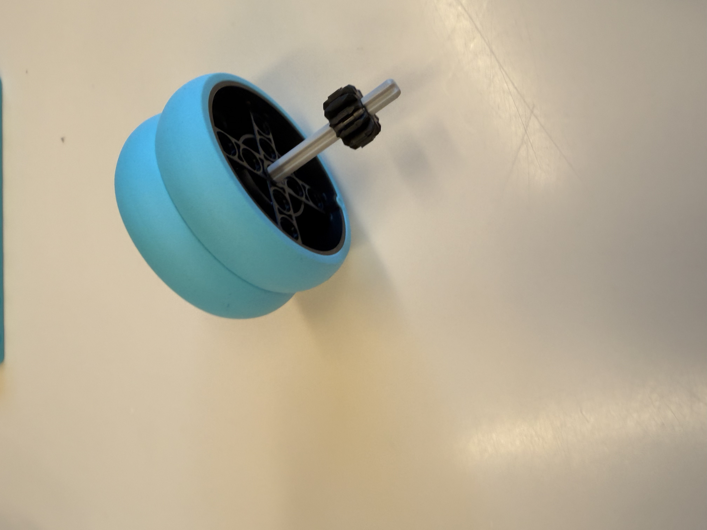
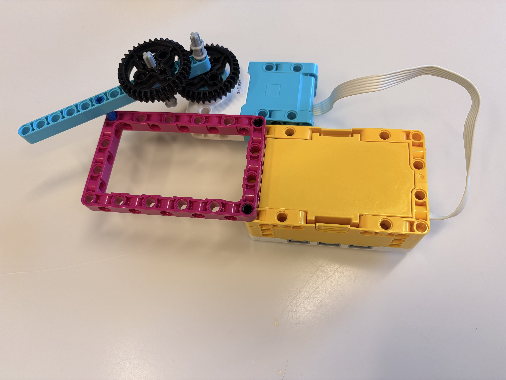
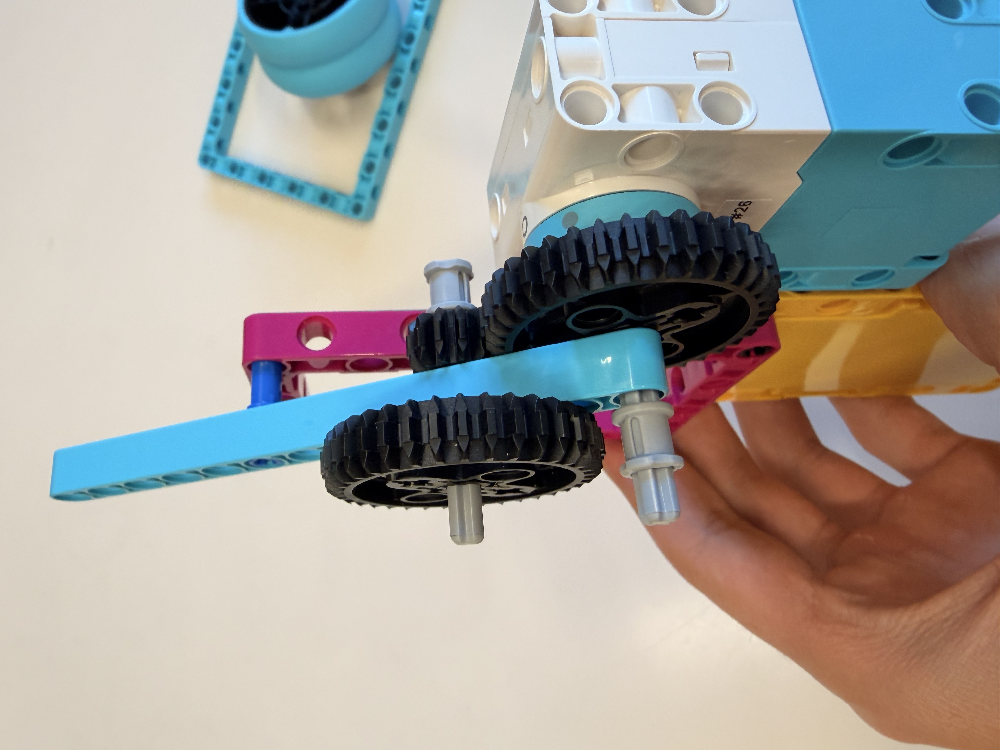
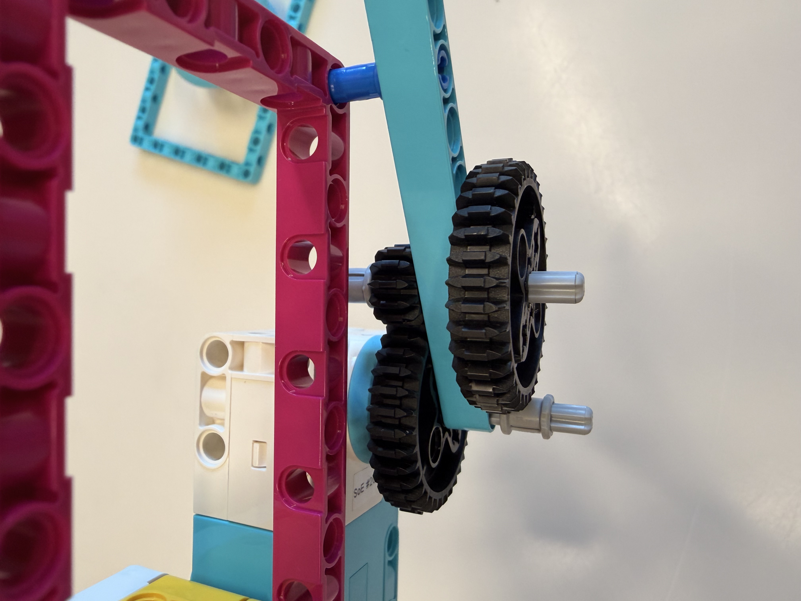
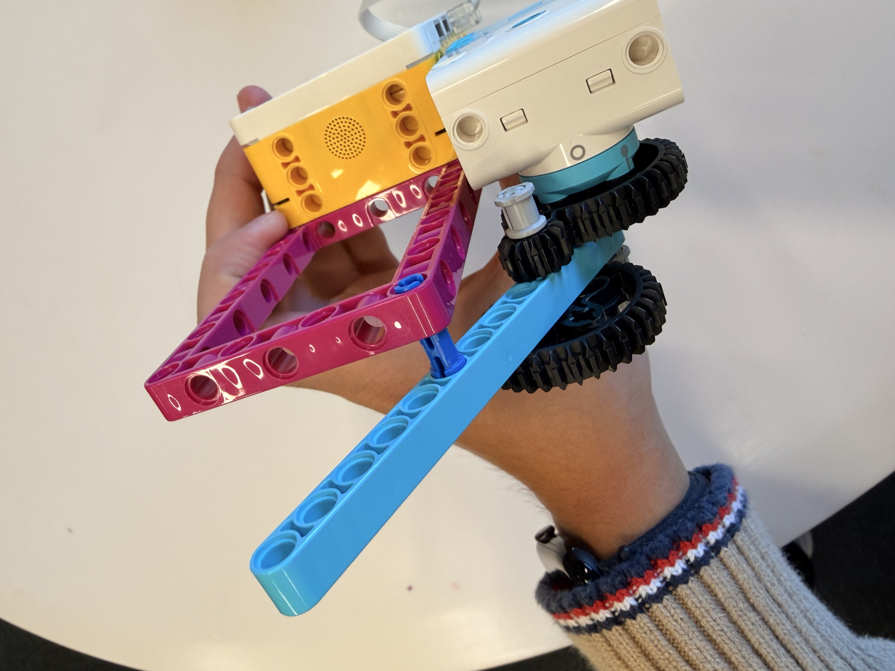

For this project, I used the LEGO Spike Prime set to build a motorized spinning top. Through this build, I learned about gear ratio, and how to use a gear train with a 1:1 rotation axis. This setup lets the gear train produce a very high gear ratio, as seen in the photos below.



